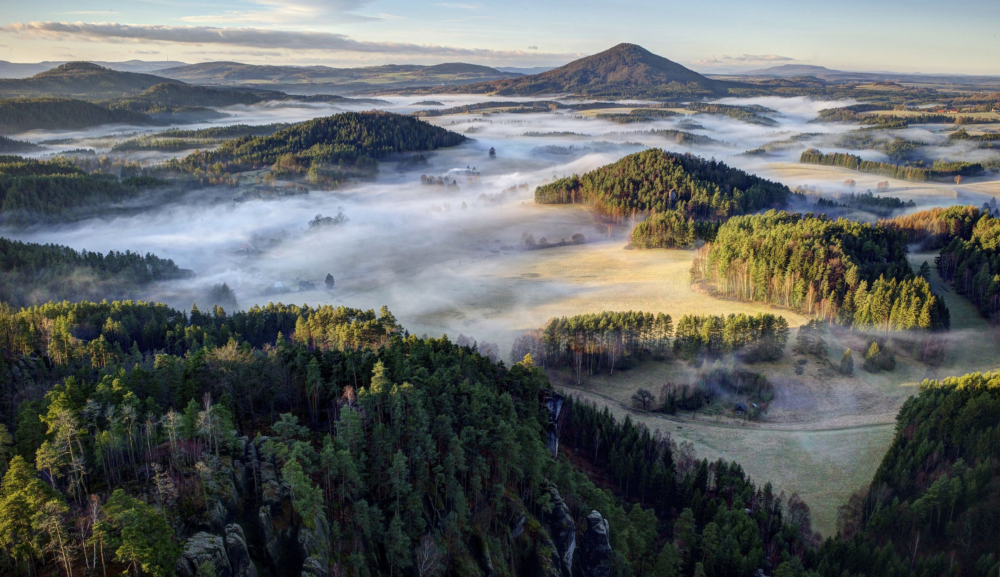

Basic Information about the Czech Republic
Czech Republic is a landlocked country in Central Europe. The country is bordered by Poland to the north, Germany to the west, Austria to the south and Slovakia to the east. Its capital and largest city, with 1.3 million inhabitants, is Prague. The Czech Republic includes the historical territories of Bohemia and Moravia and a small part of Silesia.

- Capital: Prague
- Population: 10 446 157
- Area:78,864 sq. km
- Official language: Czech
- Currency: Czech crown (koruna) – CZK
- Political System: Parliamentary democracy
Climate
The Czech Republic mostly has a temperate oceanic climate, with warm summers and cold, cloudy and snowy winters. The temperature difference between summer and winter is due to the landlocked geographical position. The coldest month is usually January, followed by February and December. During these months, there is snow in the mountains and sometimes in the cities and lowlands. During March, April, and May, the temperature usually increases, especially during April, when the temperature and weather tends to vary during the day. Spring is also characterized by higher water levels in the rivers, due to melting snow with occasional flooding. Most rain falls during the summer.
Czech Cuisine
Czech cuisine has both influenced and been influenced by the cuisines of surrounding countries and nations.
Contemporary Czech cuisine is more meat-based than in previous periods; the current abundance of farmable meat has enriched its presence in regional cuisine. The body of Czech meals typically consists of two or more courses; the first course is traditionally soup, the second course is the main dish, and the third course can include supplementary courses, such as dessert or compote (kompot).
In the Czech cuisine, thick soups and many kinds of sauces, both based on stewed or cooked vegetables and meats, often with cream, as well as baked meats with natural sauces (gravies), are popular dishes usually accompanied with beer, especially Pilsner, that Czechs consume the most in the world. Czech cuisine is also very strong in sweet main courses and desserts, a unique feature in European cuisines.
For more information about traditional dishes click here

Famous people from the Czech Republic
- Franz Kafka
- Milos Forman
- Antonin Dvorak
- Jaroslav Heyrovsky
- Vaclav Havel
- Jaromir Jagr
If you would like go back to the top click here